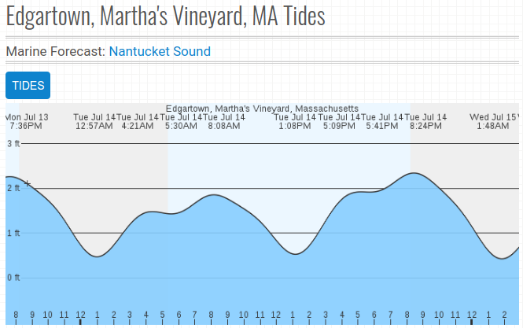

Edge Collective
Chappaquiddick Water Level: Ultrasonic Test
Water level
The ultrasonic rangefinder reports a distance measurement in centimeters. Because the sensor is mounted on a dock, pointing down at the water, this reported distance is the 'distance from the dock down to the water' -- i.e., the largest distance value is associated with the lowest water level. In order to visualize this more intuitively as 'water height' (and thus better match the predicted tide charts), we're plotting '200 cm minus rangefinder distance (cm)' -- where 200 cm is an arbitrarily chosen height.
For reference, here are predicted tide levels for a similar period (source:
marineweather.net):

Battery Voltage
The sensor and relay node are powered by a 3.7 V Lithium-ion rechargeable battery, which is being recharged via a solar charging circuit. It appears to be a characteristic of the circuit that while the panel is charging the battery we measure approx 4.3 V on the battery; when the sun is obscured by clouds, or sets in the evening, we drop down to closer to 4.13 V, and then discharge from that point.